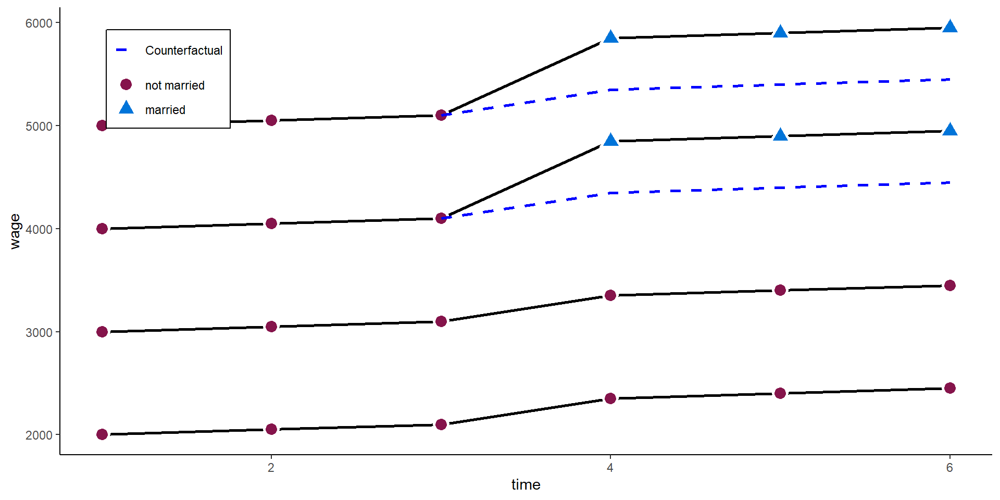

Let’s clarify the idea and advantage of panel data with an example.
Assume we want to know the relationship between age (as our independent variable) and happiness (as our dependent variable), and we have data on 24 observations.
Code
################################### Example 1: Age happiness ###################################set.seed(213)### Data simulation programsimdata <-function(N =6, T =4,age_range =c(20:60), u_sd =0.2, uw_sd =0){# id and wave df <-data.frame(matrix(NA, ncol =2, nrow = N*T))names(df) <-c("id", "time") df$id <-rep(1:N, each = T) df$time <-rep(1:T, times = N) df$idname <-factor(df$id, levels =c(1:N), labels =paste("Person", c(1:N)))# age startingage <- age_range startingage <-round(quantile(startingage, probs =seq(0, 1, 1/(N-1))), 0) df$age <-unname(rep(startingage, each = T)) + df$time*2# cohort df$cohort <-0 df$cohort[(N*T/2+1):(N*T)] <-1 df$cohort <-factor(df$cohort, levels =c(0, 1), labels =c("Younger cohort", "Older cohort"))# demeaned age df$dm_age <- df$age -ave(df$age, df$id, FUN =function(x) mean(x)) # Personal intercept df$intercept <-5+0.5* df$id# Overall error u <-rnorm(N*T, mean =0, sd = u_sd)# Additional within error uw <-unlist(lapply(1:N, function(x) rnorm(T, mean =0, sd = uw_sd)))# Gen happiness y <-1+0.05* df$age -0.2* df$dm_age +2*as.numeric(df$cohort) + u + uw df$happiness <- y# Gen person means df$m_age <-ave(df$age, df$id, FUN =function(x) mean(x)) df$m_happiness <-ave(df$happiness, df$id, FUN =function(x) mean(x)) return(df)}### Set up six individuals with age and happinessN <-6T <-4df <-simdata(N = N, T = T)# Total line for plotlm1 <-lm(happiness ~ age, data = df)lm2 <-lm(happiness ~ age + cohort, data = df)lm3 <-lm(happiness ~ age + idname, data = df)lm4 <-lm(m_happiness ~ m_age, data = df)
where \(y_{i}\) is the dependent variable (happiness) and \(x_i\) the independent variable of each observation \(i \in \{1, \dots, 24\}\). \(\beta_1\) is the coefficient of interest, \(\alpha\) the overall intercept and \(\upsilon_{i}\) the error term.
Cross-sectional setting
lm1 <-lm(happiness ~ age, data = df)summary(lm1)
Call:
lm(formula = happiness ~ age, data = df)
Residuals:
Min 1Q Median 3Q Max
-1.4964 -0.4209 -0.1201 0.6615 1.6868
Coefficients:
Estimate Std. Error t value Pr(>|t|)
(Intercept) 1.0506 0.5696 1.844 0.0787 .
age 0.1151 0.0121 9.515 2.96e-09 ***
---
Signif. codes: 0 '***' 0.001 '**' 0.01 '*' 0.05 '.' 0.1 ' ' 1
Residual standard error: 0.8206 on 22 degrees of freedom
Multiple R-squared: 0.8045, Adjusted R-squared: 0.7956
F-statistic: 90.53 on 1 and 22 DF, p-value: 2.96e-09
Cross-sectional setting
Code
# The palette with black:cbp2 <-c("#000000", "#E69F00", "#56B4E9", "#009E73","#F0E442", "#0072B2", "#D55E00", "#CC79A7")# Save the residual valuesdf$predicted <-predict(lm1)df$residuals <-residuals(lm1)zp1 <-ggplot(df, aes(age, happiness)) +geom_point( aes(x = age, y = happiness), size =2, stroke =1) +geom_smooth(method ='lm', formula = y ~ x, se =FALSE, color ="deeppink") +geom_segment(data = df, aes(xend = age, yend = predicted), alpha = .3, color ="purple") +ylim(3.3, 9.2) +expand_limits(y =c(0, 0)) +theme_classic() +theme(legend.key =element_blank(), legend.title =element_blank(),legend.position =c(0.95,0.05), legend.justification =c("right", "bottom"),legend.background =element_blank(),legend.box.background =element_rect(colour ="black"))zp1
Adding controls
Birth cohort might be a potential confounder that affects age and happiness. We would then estimate the model
Now, with panel data, we can even go a step further. Assume we would not have observed 24 independent observations, but rather 6 independent individuals (N = 6) at 4 time-points each (T = 4).
We can then decompose the available variance into three different parts:
Pooled variance
Between variance
Within variance
Pooled estimator
The pooled estimator equals what we have seen in the cross-sectional example: we basically assume that we have 24 independent observations and we ignore the person and time dimension. The Pooled OLS estimator is simply:
# Save the residual valuesdf$predicted <-predict(lm1)df$residuals <-residuals(lm1)zp3 <-ggplot(df, aes(age, happiness)) +geom_point( aes(x = age, y = happiness, shape = idname, colour = idname, fill = idname), size =2, stroke =1) +geom_smooth(method ='lm', formula = y ~ x, se =FALSE,color ="deeppink") +geom_segment(aes(xend = age, yend = predicted), alpha = .3, color ="purple") +annotate("text", x =35, y =8.0, label =paste0("beta[Pooled] ==", round(lm1$coefficients[2], 3)), parse =TRUE) +ylim(3.3, 9.2) +expand_limits(y =c(0, 0)) +scale_colour_manual(values = cbp2[-c(1, 2)]) +scale_fill_manual(values = cbp2[-c(1, 2)]) +scale_shape_manual(values =c(15:18, 25, 20)) +ggtitle("A) Pooled Estimate") +theme_classic() +theme(legend.key =element_blank(), legend.title =element_blank(),text =element_text(size =14),legend.position =c(0.95,0.05), legend.justification =c("right", "bottom"),legend.background =element_blank(),legend.box.background =element_rect(colour ="black"))zp3
Between estimator
The between estimator only compares different persons and discards the within-person variance. Therefore, we simply run a model that only uses the person-specific means
The within estimator only compares different periods within the same person and discards the between-person variance. We could also say the estimator is solely based on changes over time.
relies on very strong assumptions for consistency, most importantly: The error (including omitted variables) must not be correlated with \(x_{it}\).
\(\mathrm{E}(\upsilon_{it} | x_{it}) = 0\), or \(Cov(x_{it}, \upsilon_{it}) = 0\)
Marriage and income
Imagine we want to know how getting married affects a persons happiness or their income. POLS (and the between estimator) compare people who eventually get married to people who never get married.
What could potentially go wrong?
One-way fixed effects
To relax the strong assumption, we can decompose the error into two parts (between and within) and split up our main assumption for consistency:
\(\mathrm{E}(\alpha_{i} | x_{it}) = 0\): No time-constant unobserved heterogeneity
\(\mathrm{E}(\epsilon_{it} | x_{it}) = 0\): No time-varying unobserved heterogeneity
includes unit-specific fixed effects to account for the first type of heterogeneity. The most basic way of including person-specific dummy variable is called Least Square Dummy variable (LSDV) approach.
Idiosyncratic time-variation in \(\epsilon_{it}\) (including time trends in \(y\)) must be uncorrelated with variation in \(x_{it}\) across all time periods. However, \(\mathrm{E}(\alpha_{i} | x_{i})\) can be any function of \(x_i\).
Time-constant unobserved heterogeneity is allowed
Only time-varying unobserved heterogeneity biases the estimator
Would one-way FE get it right?
Code
##################################### Example 2: Marriage Income ######################################## Set up six individuals with age and happinessN <-4T <-6# id and wavedf2 <-data.frame(matrix(NA, ncol =2, nrow = N*T))names(df2) <-c("id", "time")df2$id <-rep(1:N, each = T)df2$time <-rep(1:T, times = N)df2$idname <-factor(df2$id, levels =c(1:N), labels =paste("Person", c(1:N)))# Marriage dummydf2$marriage_ever <-0df2$marriage_ever[(N*T/2+1):(N*T)] <-1df2$marriage <- df2$marriage_ever *ifelse(df2$time >=4, 1, 0)# Starting wagestw <-c(2000, 5000)stw <-round(quantile(stw, probs =seq(0, 1, 1/(N-1))), 0)# wage equationdf2$wage <-unname(rep(stw, each = T)) + (df2$time -1)*50+200*ifelse(df2$time >=4, 1, 0) + df2$marriage *500# counterfactual parallel trenddf2$pti <-unname(rep(stw, each = T)) + (df2$time -1)*50df2$pt <-unname(rep(stw, each = T)) + (df2$time -1)*50+200*ifelse(df2$time >=4, 1, 0) df2$pti[df2$marriage_ever ==0| df2$time <3] <-NAdf2$pt[df2$marriage_ever ==0| df2$time <3] <-NA### Add individual slope / heterogeneous time trends# wage equationdf2$wage2 <-unname(rep(stw, each = T)) + (df2$time -1)*50+ (df2$time -1)*150*df2$marriage_ever +200*ifelse(df2$time >=4, 1, 0) + df2$marriage *500# parallel trenddf2$pt2 <-unname(rep(stw, each = T)) + (df2$time -1)*50+200*ifelse(df2$time >=4, 1, 0) +2*150df2$pt2[df2$marriage_ever ==0| df2$time <3] <-NA# actual trenddf2$pt2_cr <-unname(rep(stw, each = T)) + (df2$time -1)*50+ (df2$time -1)*150*df2$marriage_ever +200*ifelse(df2$time >=4, 1, 0)df2$pt2_cr[df2$marriage_ever ==0| df2$time <3] <-NA# Marry to factordf2$marriage <-factor(df2$marriage, levels =c(0, 1), labels =c("not married", "married"))df2$marriage_ever <-as.factor(df2$marriage_ever)### Plot zp1 <-ggplot(df2, aes(time, wage)) +geom_line(aes(x = time, y = wage, group = id), lty ="solid", colour ="black", lwd =1) +geom_point( aes(x = time, y = wage, shape = marriage, fill = marriage), size =4, stroke =1.5, color ="white") +theme_classic() +scale_shape_manual(values =c(21, 24)) +scale_fill_manual(values =c("#85144b", "#0074D9")) +scale_color_manual(values =c("#85144b", "#0074D9")) +theme(legend.key =element_blank(), legend.title =element_blank(),legend.position =c(0.05,0.95), legend.justification =c("left", "top"),legend.background =element_blank(),legend.box.background =element_rect(colour ="black"),legend.spacing.y =unit(-0.1, "cm"))zp1
Would one-way FE get it right?
fe2 <-plm(wage ~ marriage, data = df2,index =c("id", "time"),effect ="individual", model ="within")summary(fe2)
Oneway (individual) effect Within Model
Call:
plm(formula = wage ~ marriage, data = df2, effect = "individual",
model = "within", index = c("id", "time"))
Balanced Panel: n = 4, T = 6, N = 24
Residuals:
Min. 1st Qu. Median 3rd Qu. Max.
-225.00 -68.75 0.00 68.75 225.00
Coefficients:
Estimate Std. Error t-value Pr(>|t|)
marriagemarried 850.000 84.552 10.053 4.834e-09 ***
---
Signif. codes: 0 '***' 0.001 '**' 0.01 '*' 0.05 '.' 0.1 ' ' 1
Total Sum of Squares: 2575000
Residual Sum of Squares: 407500
R-Squared: 0.84175
Adj. R-Squared: 0.80843
F-statistic: 101.061 on 1 and 19 DF, p-value: 4.8337e-09
Would one-way FE get it right?
FE is based on within-unit variance.
Note
A one-ways FE would effectively drop all those observations without within-variance on the independent variables. In our case, we would disregard those who never marry.
However, the never married also experienced an increase in wages when the other two married.
Would one-way FE get it right?
Code
### Plot zp3 <-ggplot(df2, aes(time, wage)) +geom_line(aes(x = time, y = wage, group = id, alpha = marriage_ever), lty ="solid", colour ="black", lwd =1) +geom_point( aes(x = time, y = wage, shape = marriage, fill = marriage, alpha = marriage_ever), size =4, stroke =1.5, color ="white") +geom_line(aes(x = time, y = pti, group = id, linetype ="dashed"), colour ="blue", lwd =1) +scale_linetype_identity(labels ="Counterfactual", guide ="legend") +scale_alpha_manual(values =c(0.5, 1), guide ="none") +# geom_mark_hull(data = df2[df2$marriage_ever == 1, ], aes(x = time, y = wage, fill = marriage),# expand = 0.01, show.legend = FALSE, colour = NA) + theme_classic() +scale_shape_manual(values =c(21, 24)) +scale_fill_manual(values =c("#85144b", "#0074D9")) +scale_color_manual(values =c("#85144b", "#0074D9")) +theme(legend.key =element_blank(), legend.title =element_blank(),legend.position =c(0.05,0.95), legend.justification =c("left", "top"),legend.background =element_blank(),legend.box.background =element_rect(colour ="black"),legend.spacing.y =unit(-0.1, "cm"))zp3
Two-ways FE
To circumvent the problem above, we want to add the never-married as a control group in our estimator.
Tip
In general, it is always a good idea to control for temporal shocks!
adds \(\zeta_t\), with are time fixed effects. Analogous to \(\alpha_i\), we could just add a dummy variable for each year / time period in the data.
This removes common time shocks independent of treatment, and takes back in individuals without variation in \(x\). We basically add a ‘control-group’ to the estimation.
Two-ways FE
In practice, we usually use a transformation approach, where we subtract the between variance by using the person-specific & time-specific means:
We can just change the effect option in plm to “twoways” to achieve this:
fe3 <-plm(wage ~ marriage, data = df2,index =c("id", "time"),effect ="twoways", model ="within")summary(fe3)
Two-ways FE
Or we add another factor variable in `felm’:
fe3_alt <-felm(wage ~ marriage | id +as.factor(time) |0| id,data = df2)summary(fe3_alt)
Call:
felm(formula = wage ~ marriage | id + as.factor(time) | 0 | id, data = df2)
Residuals:
Min 1Q Median 3Q Max
-2.842e-14 -2.842e-14 0.000e+00 2.842e-14 2.842e-14
Coefficients:
Estimate Cluster s.e. t value Pr(>|t|)
marriagemarried 5.000e+02 6.711e-14 7.45e+15 <2e-16 ***
---
Signif. codes: 0 '***' 0.001 '**' 0.01 '*' 0.05 '.' 0.1 ' ' 1
Residual standard error: 3.721e-14 on 14 degrees of freedom
Multiple R-squared(full model): 1 Adjusted R-squared: 1
Multiple R-squared(proj model): 1 Adjusted R-squared: 1
F-statistic(full model, *iid*):3.125e+33 on 9 and 14 DF, p-value: < 2.2e-16
F-statistic(proj model): 5.551e+31 on 1 and 3 DF, p-value: < 2.2e-16
Two-ways FE
Code
### Plot zp4 <-ggplot(df2, aes(time, wage)) +geom_line(aes(x = time, y = wage, group = id), lty ="solid", colour ="black", lwd =1) +geom_point( aes(x = time, y = wage, shape = marriage, fill = marriage), size =4, stroke =1.5, color ="white") +geom_line(aes(x = time, y = pt, group = id, linetype ="dashed"), colour ="blue", lwd =1) +scale_linetype_identity(labels ="Counterfactual", guide ="legend") +theme_classic() +scale_shape_manual(values =c(21, 24)) +scale_fill_manual(values =c("#85144b", "#0074D9")) +scale_color_manual(values =c("#85144b", "#0074D9")) +theme(legend.key =element_blank(), legend.title =element_blank(),legend.position =c(0.05,0.95), legend.justification =c("left", "top"),legend.background =element_blank(),legend.box.background =element_rect(colour ="black"),legend.spacing.y =unit(-0.1, "cm"))zp4

A very critical assumption
In the example above, the twoways FE model works very well. However, adding the control group back in comes with a strong assumption:
Parallel trends between “treatment” and “control” units
Comparing the 3 waves before the treatment above, this assumption here holds. Both - those who marry and those who never marry - have the same time trend in wages before the “treated” marry.
A very critical assumption
Code
zp5 <-ggplot(df2, aes(time, wage2)) +geom_line(aes(x = time, y = wage2, group = id), lty ="solid", colour ="black", lwd =1) +geom_point( aes(x = time, y = wage2, shape = marriage, fill = marriage), size =4, stroke =1.5, color ="white") +# geom_line(aes(x = time, y = pt2, group = id, linetype = "dashed"), colour = "blue", lwd = 1) +# geom_line(aes(x = time, y = pt2_cr, group = id, linetype = "dashed"), colour = "grey", lwd = 1, show.legend = FALSE, alpha = 0.7) +scale_linetype_identity(labels ="Counterfactual", guide ="legend") +# scale_alpha_manual(values = c(0.3, 1), guide = "none") +# ylim(3.3, 9.2) + expand_limits(y = c(0, 0)) + theme_classic() +scale_shape_manual(values =c(21, 24)) +scale_fill_manual(values =c("#85144b", "#0074D9")) +scale_color_manual(values =c("#85144b", "#0074D9")) +ylab("wage") +theme(legend.key =element_blank(), legend.title =element_blank(),legend.position =c(0.05,0.95), legend.justification =c("left", "top"),legend.background =element_blank(),legend.box.background =element_rect(colour ="black"),legend.spacing.y =unit(-0.1, "cm"))zp5
A very critical assumption
fe3 <-plm(wage2 ~ marriage, data = df2,index =c("id", "time"),effect ="twoways", model ="within")summary(fe3)
Twoways effects Within Model
Call:
plm(formula = wage2 ~ marriage, data = df2, effect = "twoways",
model = "within", index = c("id", "time"))
Balanced Panel: n = 4, T = 6, N = 24
Residuals:
Min. 1st Qu. Median 3rd Qu. Max.
-75 -75 0 75 75
Coefficients:
Estimate Std. Error t-value Pr(>|t|)
marriagemarried 950.000 65.465 14.511 7.881e-10 ***
---
Signif. codes: 0 '***' 0.001 '**' 0.01 '*' 0.05 '.' 0.1 ' ' 1
Total Sum of Squares: 1443800
Residual Sum of Squares: 90000
R-Squared: 0.93766
Adj. R-Squared: 0.89759
F-statistic: 210.583 on 1 and 14 DF, p-value: 7.8808e-10
Difference in Differences
Difference in Differences
The difference-in-differences (DD) design is a very basic and popular design to identify causal treatment effects in a panel data setting.
The most basic setting, is a \(2\times 2\) DD estimator. It consists of a setting where we have 2 groups: a treatment group (\(T\)) and control group (\(C\)). Each group has been observed at 2 time points: before treatment (\(pre\)) and after treatment (\(post\)).
See Cunningham (2021) and Huntington-Klein (2021).
Difference in Differences
In this setting we can calculate the change in the treatment group: \[
\mathrm{E}(\Delta y_{T}) = \mathrm{E}(y_{T}^{post}) - \mathrm{E}(y_{T}^{pre}),
\]
and likewise in the control group: \[
\mathrm{E}(\Delta y_{C}) = \mathrm{E}(y_{C}^{post}) - \mathrm{E}(y_{C}^{pre}).
\]
The simple DD estimator is then the difference between the differences in the treatment group and the differences in the control group:
is the same estimator in a simple regression, \(D \in {0, 1}\) is a binary indicator of the treatment group and \(Post \in {0, 1}\) a binary indicator of pre- or post-treatment period.
\(\alpha\): average outcome of control group in pre-treatment period
\(\gamma\): average difference between treatment and control group in pre-treatment period
\(\lambda\): average difference between post- pre-treatment period in control group
\(\delta_{DD}\): difference between treatment and control group in difference between post- pre-treatment period
Difference in Differences
df2$marry_post <-0df2$marry_post[df2$time >=4] <-1did1 <-lm(wage ~ marriage_ever*marry_post, data = df2)summary(did1)
Call:
lm(formula = wage ~ marriage_ever * marry_post, data = df2)
Residuals:
Min 1Q Median 3Q Max
-550 -500 0 500 550
Coefficients:
Estimate Std. Error t value Pr(>|t|)
(Intercept) 2550.0 224.4 11.366 3.53e-10 ***
marriage_ever1 2000.0 317.3 6.304 3.74e-06 ***
marry_post 350.0 317.3 1.103 0.283
marriage_ever1:marry_post 500.0 448.7 1.114 0.278
---
Signif. codes: 0 '***' 0.001 '**' 0.01 '*' 0.05 '.' 0.1 ' ' 1
Residual standard error: 549.5 on 20 degrees of freedom
Multiple R-squared: 0.8449, Adjusted R-squared: 0.8217
F-statistic: 36.32 on 3 and 20 DF, p-value: 2.757e-08
Difference in Differences
In a setting where \(T=2\) or in a setting where every observation is treated at the same time, the DD equals the two-ways FE.
In general, DD and two-ways DD are often seen as equivalents. However, the situation becomes more complicated when treatment timing varies (Goodman-Bacon 2021).
Tip
When estimating FE or Diff-in-Diff estimators, “one should restrict the estimation sample to those persons who can potentially experience the treatment during the observation window”. Usually this means that we start with the not-yet-treated and omit the already-treated (Brüderl and Ludwig 2015).
Instead of assuming \(\alpha_i\) are fixed effects, we treat them as i.i.d random effects, usually assuming they are normally distributed
Random effects estimator
The RE estimator has two main “advantages” over the FE estimator:
It is more efficient if \(\mathrm{E}(\alpha_{i} | x_{it}) = 0\): it has lower standard errors
It allows to estimate the effects of time-constant variables
Random effects estimator
However, it obscures the main advantage of panel data: the relaxation of assumptions for consistency of estimators. The RE estimator needs the same assumptions as POLS for consistency:
\(\mathrm{E}(\alpha_{i} | x_{it}) = 0\): No time-constant unobserved heterogeneity
\(\mathrm{E}(\epsilon_{it} | x_{it}) = 0\): No time-varying unobserved heterogeneity
Random effects estimator
We can also write the RE as a quasi-demeaned estimator:
where \(\hat{\lambda} = 1 - \sqrt{\frac{\sigma^2_\epsilon}{\sigma^2_\epsilon + T\sigma^2_\alpha}}\), with \(\sigma^2_\epsilon\) denoting the residual variance, and \(\sigma^2_\alpha\) denoting the variance of the individual effects \(\alpha_i\).
Random effects estimator
The RE (as POLS) is thus a weighted average of between and within estimator. The weights are determined by the residual variance in FE as share of total residual variance:
\(T\) large, \(\sigma^2_\alpha\) large, then RE \(\rightarrow\) FE
\(\sigma^2_\alpha\) small, then RE \(\rightarrow\) POLS
The RE uses all the available information - between and within variance - and weights the two components by its “predictive power”. This makes it the most efficient estimator.
RE in plm
Let’s estimate the RE for the happiness - age example, again using the plm package.
Code
re1 <-plm(happiness ~ age, data = df,index =c("id", "time"),effect ="individual", model ="random")summary(re1)
RE in plm
Let’s estimate the RE for the happiness - age example, again using the plm package.
Code
re1 <-plm(happiness ~ age, data = df,index =c("id", "time"),effect ="individual", model ="random")summary(re1)
Oneway (individual) effect Random Effect Model
(Swamy-Arora's transformation)
Call:
plm(formula = happiness ~ age, data = df, effect = "individual",
model = "random", index = c("id", "time"))
Balanced Panel: n = 6, T = 4, N = 24
Effects:
var std.dev share
idiosyncratic 0.03641 0.19081 0.096
individual 0.34396 0.58648 0.904
theta: 0.8394
Residuals:
Min. 1st Qu. Median 3rd Qu. Max.
-1.054061 -0.353296 0.013426 0.316500 0.898703
Coefficients:
Estimate Std. Error z-value Pr(>|z|)
(Intercept) 6.933947 1.534054 4.5200 6.183e-06 ***
age -0.015621 0.031277 -0.4994 0.6175
---
Signif. codes: 0 '***' 0.001 '**' 0.01 '*' 0.05 '.' 0.1 ' ' 1
Total Sum of Squares: 5.1257
Residual Sum of Squares: 5.0683
R-Squared: 0.011211
Adj. R-Squared: -0.033734
Chisq: 0.249442 on 1 DF, p-value: 0.61747
Brüderl, Josef, and Volker Ludwig. 2015. “Fixed-Effects Panel Regression.” In The Sage Handbook of Regression Analysis and Causal Inference, edited by Henning Best and Christof Wolf, 327–57. Los Angeles: Sage.
Cunningham, Scott. 2021. Causal Inference: The Mixtape. New Haven and London: Yale University Press.